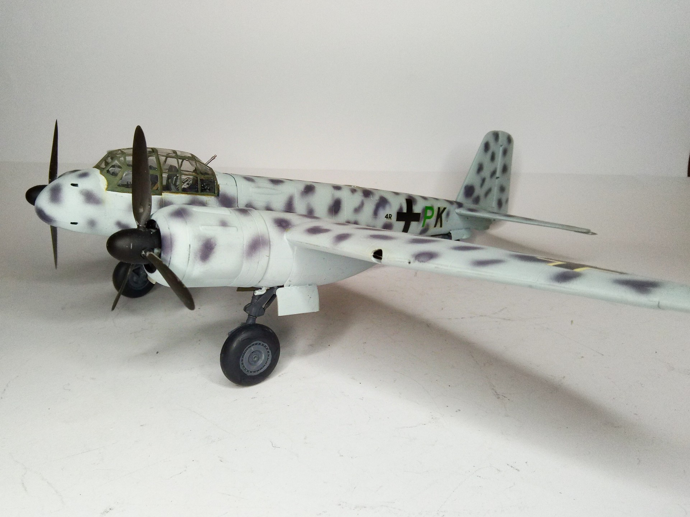
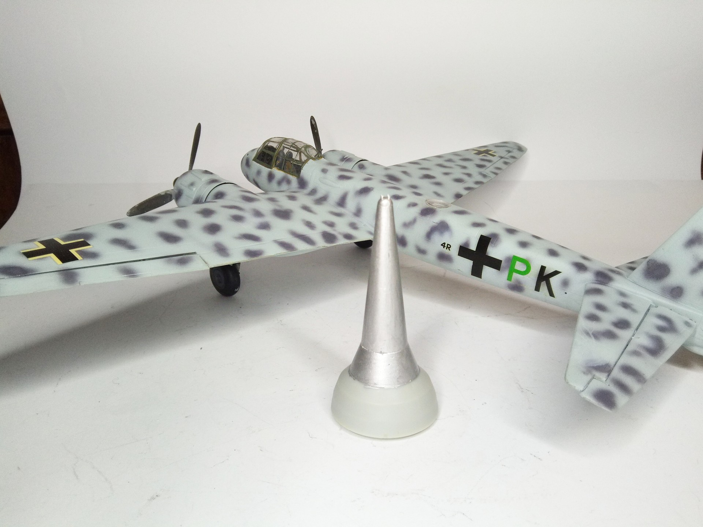
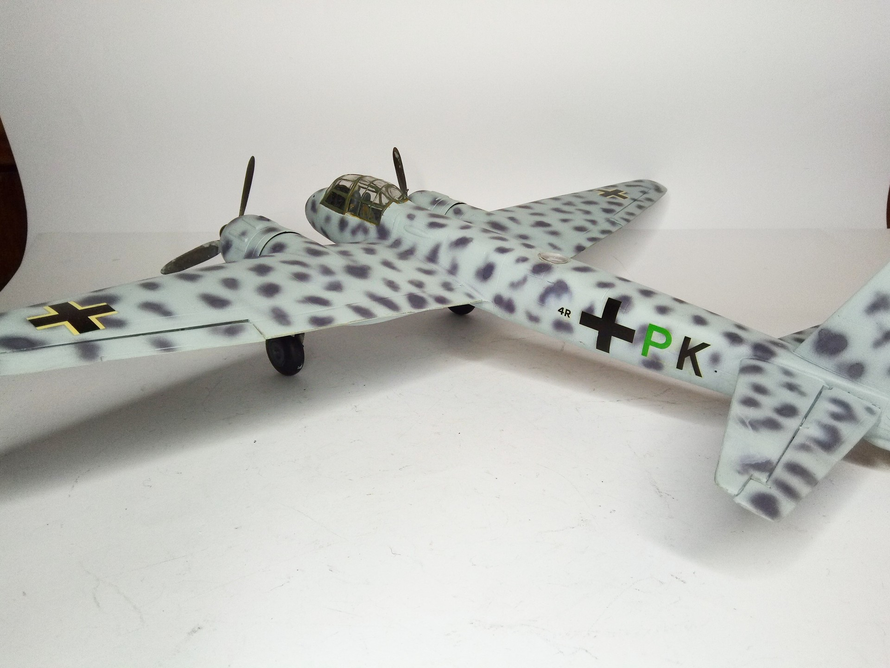

Aerei · scale model archive
Junkers Ju88 G
Junkers Ju88 G — Kit: Dragon, Scale: 1/48. Also shown a huge warhead for the `mistel' version #1/48 #Dragon #plasticmodelkit #Ju88G

Photo gallery


English description
Also shown a huge warhead for the `mistel' version
#1/48 #Dragon #plasticmodelkit #Ju88G
Descrizione italiana
È mostrata anche un’enorme testata per la versione “Mistel”.